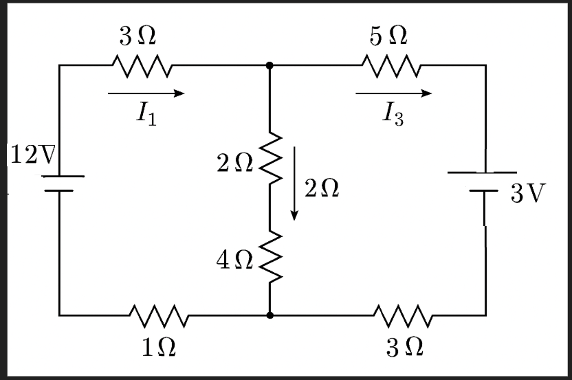

Multi-loop circuit analysis involves applying Kirchhoff's Laws systematically to solve complex circuits with multiple loops and junctions. This method allows us to find currents, voltages, and power in each component of the circuit.
Systematic Analysis Method
🎯 Systematic Approach
Multi-loop analysis uses Kirchhoff's Laws to create a system of equations that can be solved simultaneously.
This systematic approach prevents errors and ensures all circuit elements are properly analyzed.
Step 1: Identify Circuit Elements
Count the number of independent loops
Identify all voltage sources (batteries, emf)
Identify all resistors and their values
Mark junctions where currents split or combine
Step 2: Assign Current Variables
Assign a current variable to each independent loop
Use consistent direction (clockwise or counterclockwise)
Label currents as I₁, I₂, I₃, etc.
Shared elements carry the difference of loop currents
Step 3: Apply Kirchhoff's Voltage Law
Write KVL equation for each independent loop
Follow sign conventions: +V for voltage rises, -V for drops
Include all voltage sources and resistors in each loop
For shared elements, use the net current through them
Step 4: Apply Kirchhoff's Current Law (if needed)
Use KCL at junctions to relate loop currents
This provides additional equations if needed
Often not necessary if loop currents are independent
Step 5: Solve the System of Equations
Use substitution, elimination, or matrix methods
Check that the number of equations equals the number of unknowns
Verify solutions by checking power conservation
Example: Three-Loop Circuit
Problem: Find the currents in a circuit with three loops, multiple resistors, and two batteries (12 V and 3 V).

Complex circuit with three independent loops and two batteries
Step 1: Assign Current Variables
Let \( I_1 \) be the current in the left loop (clockwise), \( I_2 \) be the current through the middle vertical branch (downward), and \( I_3 \) be the current in the right loop (clockwise).
Step 2: Write KVL Equations
Apply Kirchhoff’s Voltage Law (KVL) to each loop, using the passive sign convention and Ohm’s Law.